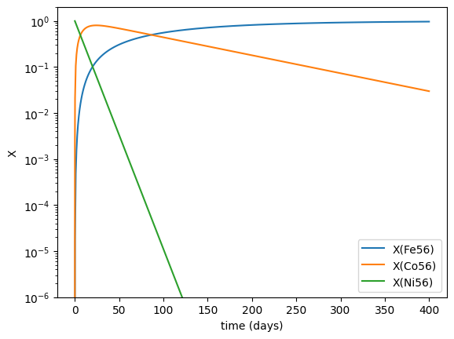
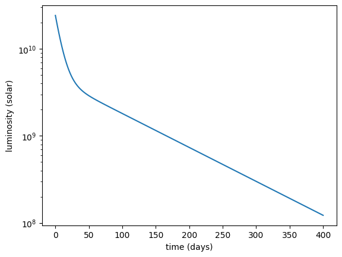

A Supernova Lightcurve#
ReacLib provides the beta-decay constants for radioactive nuclei, and these can be treated like any other rate. So we can build a network with \({}^{56}\mathrm{Ni}\) and compute its decay.
import pynucastro as pyna
import numpy as np
import matplotlib.pyplot as plt
from scipy.integrate import solve_ivp
We’ll look at \({}^{56}\mathrm{Ni} \rightarrow {}^{56}\mathrm{Co} \rightarrow {}^{56}\mathrm{Fe}\)
nuclei = ["ni56", "co56", "fe56"]
rl = pyna.ReacLibLibrary()
lib = rl.linking_nuclei(nuclei)
We see that we pull in 2 rates, which are simple decays.
lib
Co56 ⟶ Fe56 + e⁺ + 𝜈 [Q = 4.57 MeV] (Co56 --> Fe56 <reaclib_wc12>)
Ni56 ⟶ Co56 + e⁺ + 𝜈 [Q = 2.13 MeV] (Ni56 --> Co56 <reaclib_wc12>)
net = pyna.PythonNetwork(libraries=[lib])
We can write out the network to solve.
net.write_network("decay.py")
#%pycat decay.py
import decay
We’ll start out with pure \({}^{56}\mathrm{Ni}\) and convert to molar fractions, since that’s what we integrate.
X = np.zeros(len(net.unique_nuclei))
X[decay.jni56] = 1.0
Y0 = X / decay.A
Even though the rates have no density or temperature dependence, we still need to pass in a \((\rho, T)\), so we’ll just set them to arbitrary values.
rho0 = 1.0
T0 = 1.0
We’ll integrate for 400 days
seconds_per_day = 24 * 3600
tmax = 400 * seconds_per_day
We can use the default integrator in solve_ivp() since this system is not stiff.
sol = solve_ivp(decay.rhs, [0, tmax], Y0,
dense_output=True, args=(rho0, T0), rtol=1.e-8, atol=1.e-10)
Now we can look at the evolution of the composition
fig, ax = plt.subplots()
for n in range(len(net.unique_nuclei)):
ax.semilogy(sol.t / seconds_per_day, decay.A[n] * sol.y[n, :], label=f"X({decay.names[n].capitalize()})")
ax.set_ylim(1.e-6, 2)
ax.legend()
ax.set_xlabel("time (days)")
ax.set_ylabel("X")
Text(0, 0.5, 'X')

If we want the luminosity, we can compute that as the instantaneous energy release. Note: this assumes that all of the energy release is given to photons. For this, we need the rates, which we can get these by iterating over the solution
L = []
for n in range(sol.y.shape[-1]):
Y = sol.y[:, n]
dYdt = decay.rhs(sol.t[n], Y, rho0, T0)
L.append(decay.energy_release(dYdt))
L is now in erg/g/s, so we should multiply by the initial \({}^{56}\mathrm{Ni}\) mass.
M_sun = 2.e33
L_sun = 4.e33
# initial mass
M_Ni56 = 1.0 * M_sun
L = np.array(L) * M_sun
Now we can plot the lightcurve.
fig, ax = plt.subplots()
ax.semilogy(sol.t / seconds_per_day, L / L_sun)
ax.set_xlabel("time (days)")
ax.set_ylabel("luminosity (solar)")
Text(0, 0.5, 'luminosity (solar)')
